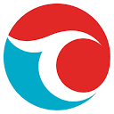
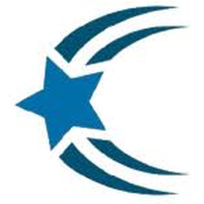
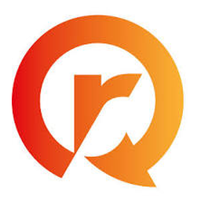

Compulsory earthquake insurance
Get your DASK sorted with one phone call.
We prepare the DASK policy required for residential buildings from a few details and keep track of your renewal date.
What does DASK cover?
- Earthquake damage
- Structural damage caused directly to your building by an earthquake.
- Fire and explosion after a quake
- Fire, explosion and similar damage triggered by an earthquake.
- Landslide and tsunami
- Earthquake-related landslide and tsunami damage is also covered.
- Contents are not covered
- DASK covers the building only; consider extra cover for belongings and other losses.
Who is it for?
- Owners of residential property within municipal limits
- Buyers taking a mortgage and handling title deed transfer
- Tenants who want to provide a policy to their landlord
- Anyone renewing an existing policy
The 24 insurers we work with
 Ak Sigorta
Ak Sigorta AXA Sigorta
AXA Sigorta
Türkiye Sigorta
Türkiye Katılım Sigorta- Sompo Sigorta
 Anadolu Sigorta
Anadolu Sigorta Allianz
Allianz Ankara Sigorta
Ankara Sigorta Hepiyi Sigorta
Hepiyi Sigorta Koru Sigorta
Koru Sigorta Doğa Sigorta
Doğa Sigorta Unico Sigorta
Unico Sigorta
- Orient Sigorta
 HDI Sigorta
HDI Sigorta Zurich Sigorta
Zurich Sigorta Atlas Mutuel
Atlas Mutuel Ray Sigorta
Ray Sigorta Quick Sigorta
Quick Sigorta Corpus Sigorta
Corpus Sigorta Mapfre Sigorta
Mapfre Sigorta
Referans Sigorta Türk Nippon Sigorta
Türk Nippon Sigorta Ana Sigorta
Ana Sigorta Neova Sigorta
Neova Sigorta
Frequently asked questions
Is DASK mandatory?
Yes, for residential buildings within municipal limits in Turkey. A policy can be requested for title deed transactions and utility subscriptions.
How is the DASK premium determined?
It is calculated under the official tariff from criteria such as construction type, floor area, damage history and earthquake zone. Coverage limits follow current regulation.
Does DASK cover my belongings?
No. DASK only covers structural damage to the building. Contents need a separate home insurance policy.
When should I renew?
DASK policies run for one year. Renewing before expiry is both a legal duty and your protection if damage occurs.
Let’s prepare your quote now.
The form takes about a minute. Or just leave your phone number and we will call you.